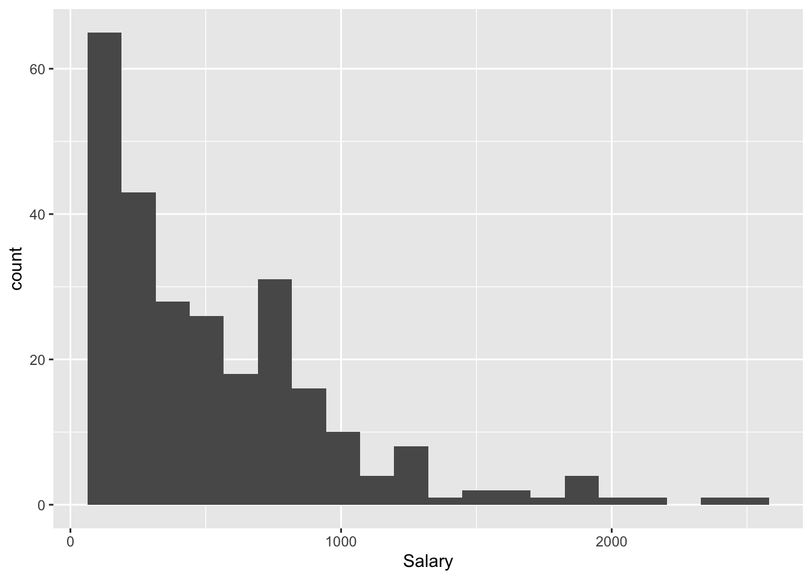
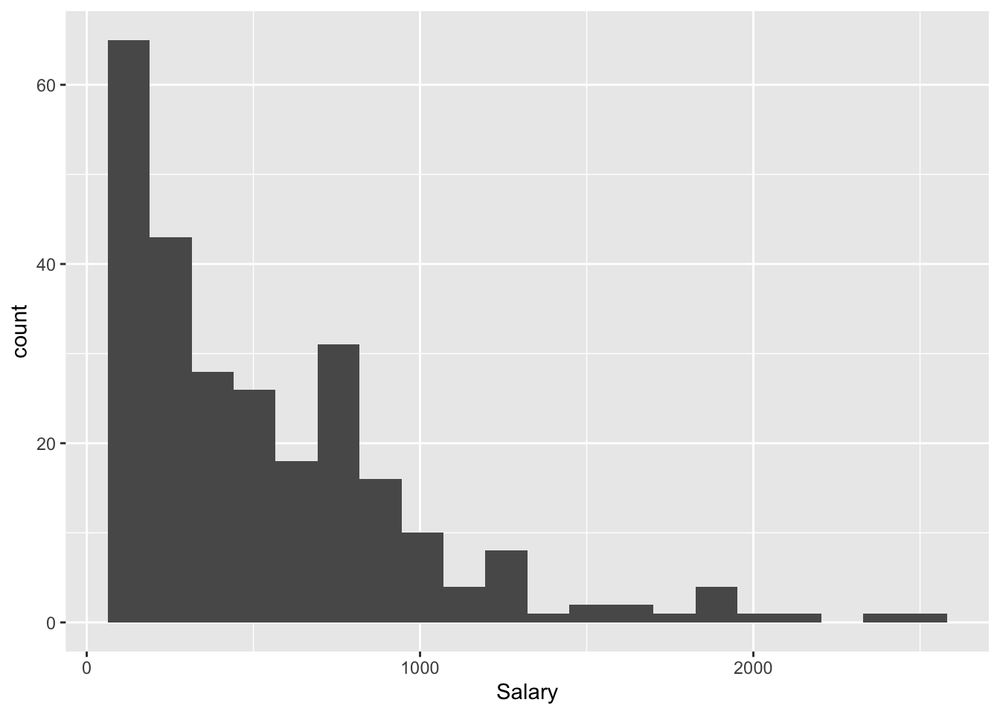
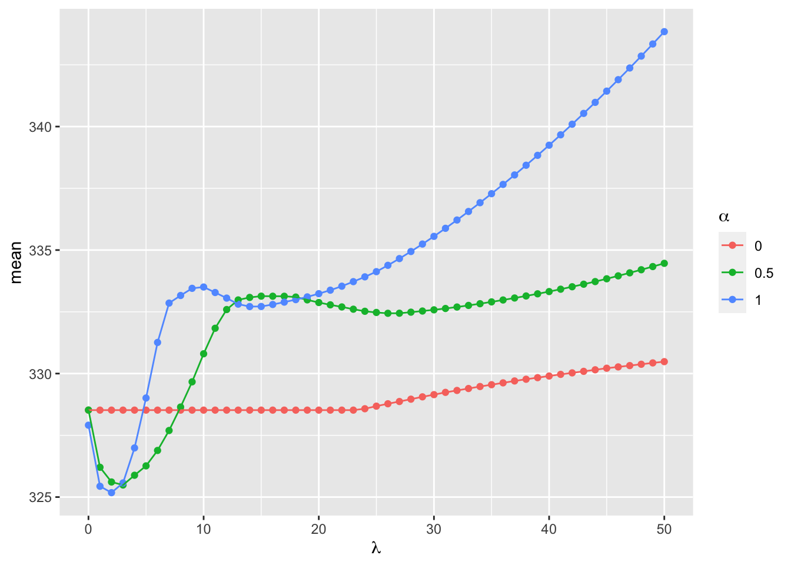

library(ISLR)
library(tidymodels)
library(tidyverse)
ggplot(Hitters, aes(x = Salary)) +
geom_histogram(bins = 20)
STA 363 - Spring 2023
Hitters dataset by running ?Hitters in the ConsoleSalary from all of the other 19 variables in this dataset. Create a visualization of Salary.library(ISLR)
library(tidymodels)
library(tidyverse)
ggplot(Hitters, aes(x = Salary)) +
geom_histogram(bins = 20)
hitters_recipe <- recipe(Salary ~ ., data = Hitters) |>
step_scale(all_predictors())
## this will run, but there is still a problem because we might have nominal variables, we will fix this in part 2hitters_recipe <- recipe(Salary ~ ., data = Hitters) |>
step_dummy(all_nominal()) |>
step_naomit(all_outcomes()) |>
step_impute_mean(all_predictors()) |>
step_scale(all_predictors()) set.seed(1)Hitters datasetset.seed(1)
hitters_cv <- vfold_cv(Hitters, v = 5)ridge_spec <- linear_reg(penalty = 300, mixture = 0) |>
set_engine("glmnet")
hitters_fit <- fit_resamples(
ridge_spec,
preprocessor = hitters_recipe,
resamples = hitters_cv)collect_metrics(hitters_fit) |>
filter(.metric == "rmse")# A tibble: 1 × 6
.metric .estimator mean n std_err .config
<chr> <chr> <dbl> <int> <dbl> <chr>
1 rmse standard 336. 5 20.0 Preprocessor1_Model1The RMSE is 335.66.
Hitters cross validation object and recipe created in the previous exercise, use tune_grid to pick the optimal penalty and mixture values.tuned_spec <- linear_reg(penalty = tune(), mixture = tune()) |>
set_engine("glmnet")grid <- expand_grid(
penalty = seq(0, 50, by = 1),
mixture = seq(0, 1, by = 0.5)
)tune_grid function. Then use collect_metrics and filter to only include the RSME estimates.hitters_tunedfit <- tune_grid(
tuned_spec,
preprocessor = hitters_recipe,
grid = grid,
resamples = hitters_cv
)collect_metrics(hitters_tunedfit) |>
filter(.metric == "rmse") |>
ggplot(aes(x = penalty, y = mean, color = factor(mixture))) +
geom_point() +
geom_line() +
labs(color = expression(alpha),
x = expression(lambda))
workflowfinal_spec <- linear_reg(penalty = 2, mixture = 1) |>
set_engine("glmnet")
workflow() |>
add_recipe(hitters_recipe) |>
add_model(final_spec) |>
fit(data = Hitters) |>
tidy()# A tibble: 20 × 3
term estimate penalty
<chr> <dbl> <dbl>
1 (Intercept) 140. 2
2 AtBat -257. 2
3 Hits 274. 2
4 HmRun 1.57 2
5 Runs 0 2
6 RBI 0 2
7 Walks 110. 2
8 Years -50.7 2
9 CAtBat -1.36 2
10 CHits 0 2
11 CHmRun 47.2 2
12 CRuns 241. 2
13 CRBI 125. 2
14 CWalks -160. 2
15 PutOuts 77.7 2
16 Assists 30.8 2
17 Errors -15.7 2
18 League_N 16.8 2
19 Division_W -59.8 2
20 NewLeague_N 0 2workflow() |>
add_recipe(hitters_recipe) |>
add_model(final_spec) |>
fit(data = Hitters) |>
tidy() |>
filter(estimate != 0)# A tibble: 16 × 3
term estimate penalty
<chr> <dbl> <dbl>
1 (Intercept) 140. 2
2 AtBat -257. 2
3 Hits 274. 2
4 HmRun 1.57 2
5 Walks 110. 2
6 Years -50.7 2
7 CAtBat -1.36 2
8 CHmRun 47.2 2
9 CRuns 241. 2
10 CRBI 125. 2
11 CWalks -160. 2
12 PutOuts 77.7 2
13 Assists 30.8 2
14 Errors -15.7 2
15 League_N 16.8 2
16 Division_W -59.8 2